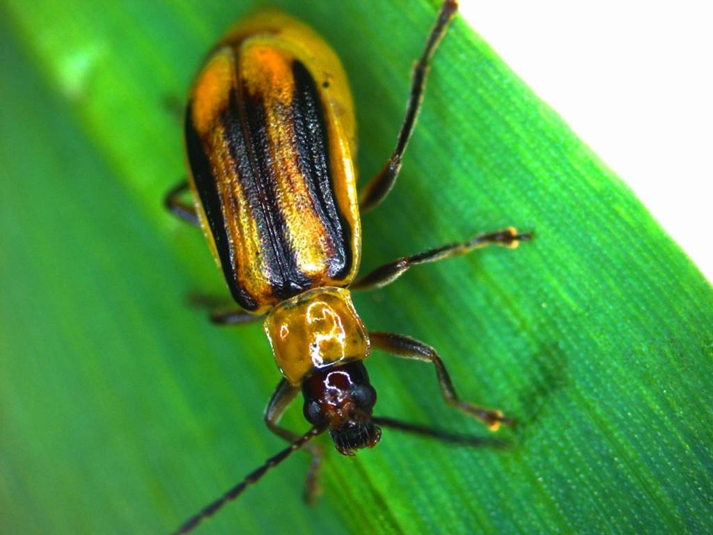
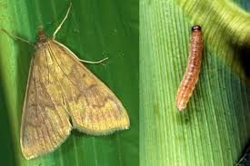

Вредители кукурузы
Западный кукурузный жук (Diabrotica virgifera)
Описание:
Карантинный вредитель-отмечен на юге Молдавии с 2024г, на севере и в центральном районе появился присутствует около 4 лет. Длина тела взрослой особи составляет 4.2-6.8 мм. Цвет надкрыльев и переднеспинки варьирует от светло-желтого до коричневого. У имаго длинные нитевидные усики. Характерен половой диморфизм. Яйца беловато-желтые до 0.5 мм. Личинка червеобразная.Окрас покровов от белого до желтоватого, Максимальный размер 10-18 мм. Головка светло-коричневая.Отличительный видовой признак – темная полоса от начала теменного шва примерно на 1/3 длины каждого лобного шва, создающая таким образом раздвоенный рисунок. Куколка-белая, мягкая.
Стадии развития:
Массовый выход имаго приходится на начало цветения кукурузы. Взрослые насекомые предпочитают питаться кукурузой. При ее отсутствии поедают генеративные органы подсолнечника, а также растений из семейства тыквенных.Жуки способны перелетать в поисках кормовых растений на расстояние до 100 км, а средняя скорость передвижения вредителя за год составляет около 40–50 км.После вылета и дополнительного питания жуки спариваются. Самки откладывают яйца в почву на полях кукурузы, преимущественно у самого основания стебля. Плодовитость до 1000 шт.
Повреждения:
Имаго питается пыльцой, зернами в стадии молочно-восковой спелости, личинки – корнями растения. Повреждаемые растения полегают, если корневая система уничтожена на 50%. Полегание может происходить при сильном ветре.
Меры борьбы:
Агротехнические: зяблевая вспашка с оборотом пласта, соблюдение севооборота. Для обнаружения и мониторинга вредителя, в конце июня устанавливают феромонные ловушки. В период массового лёта жуков, что обычно совпадает с фазой цветения кукурузы, примененяют разрешённый на кукурузе инсектицид.
Кукурузный стеблевой мотылёк(Ostrinia nubialis)
Описание:
Взрослая бабочка в размахе крыльев достигает от 26 до 32 мм. Мужские особи немного меньше самок и имеют более темную окраску. Передние крылья у имаго серо-коричневые, с двумя волнистыми перевязями. Задние крылья также имеют широкую перевязь, но окрашены в более светлые тона.Яйцо слегка приплюснутое, мутно-кремового цвета.Личинка (гусеница) в старшем возрасте достигает 2,5 см в длину. Она имеет сегментированное тело серовато-желтого оттенка с темной полоской и точками вдоль спины. В течение жизненного цикла личинка проходит 5 стадий развития, линяя 4 раза. Куколка светло-коричневая, до 2 см длиной. В течение июня-июля обычно отмечается лёт бабочек с одновременной откладкой яйц, как правило на 3-6 листе более развитых растений.
Стадии развития:
Выход имаго из куколок начинается примерно в середине июня и продолжается около месяца. Бабочки ведут ночной образ жизни, преодолевая расстояние от 2 до 3 км. Днем взрослые насекомые скрываются в зарослях, преимущественно на нижней стороне листьев. Примерно через 3–5 дней (обычно совпадает с периодом цветения и выбрасывания метелок на кукурузе) оплодотворенные самки начинают откладывать яйца. Продуктивность зависит от погодных условий и может достигать от 100 до 1200 яиц (в среднем около 400 штук). Во время сильной и затяжной засухи плодовитость бабочек снижается вдвое. Самки откладывают яйца небольшими группами (по 10–15 штук) на тыльной стороне листовых пластинок. Эмбриональное развитие продолжается от 3 дней до 2 недель. После отрождения личинки I и II возраста обитают в верхней части стеблей. В конце жизненного цикла гусеницы мигрируют к основанию стебля, вследствие чего после уборки урожая большая часть вредителей остается в стерне, где и зимует. В оставшемся после срезания кукурузы отрезке стебля личинка формирует защищенное от внешних воздействий «гнездо», закрывая его с обеих сторон подобием пробки. Благодаря этому выдерживает морозы до -30ºС.Весной, как только температура воздуха достигает отметки +15ºС, личинка окукливается.
Повреждения:
Гусеницы повреждают молодые листья, по мере взросления, они перебираются на кукурузные початки, которые являются более питательной пищей. Достигнув старшего возраста, личинки вгрызаются внутрь побегов, где питаются растительной тканью, проделывая длинные хода и засоряя их отходами жизнедеятельности Развитие куколки занимает от двух до трех недель, после чего, в результате метаморфоза, из нее выходит взрослая бабочка, и цикл развития стеблевого кукурузного мотылька замыкается
Меры борьбы:
Для снижения вредоносности вредителя, во время откладки яиц необходимо произвести двойной запуск трихограммы: 1-при выявлении первых яйцекладок или через 4-6 дней после отлова первых бабочек на феромонную ловушку. 2- через 7 дней. В очагах со значительной вредоносностью (более 10-12 яиц или гусениц на 100 растений), в период появления метёлок и нитей, против гусениц младших возрастов рекомендуется применение инсектицидов разрешённых на кукурузе.